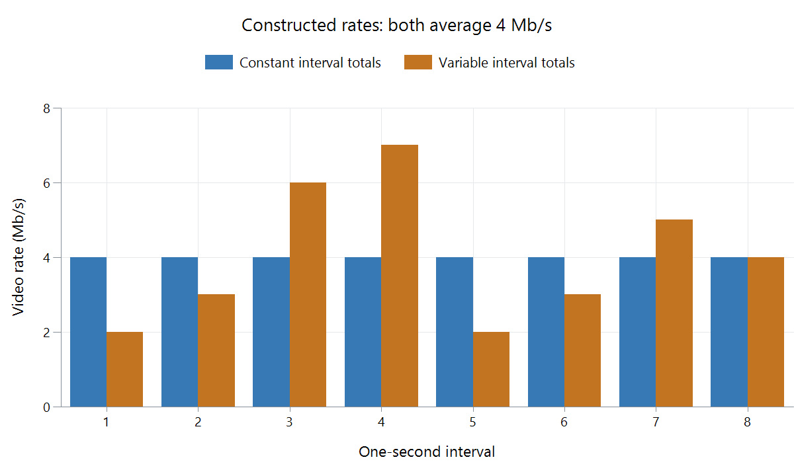

Variable Bitrate Video Encoding
Variable bitrate (VBR) encoding lets the amount of coded data change through a video. Simple pictures can use fewer bits, leaving more room for complicated motion, texture, or grain.
The term covers more than one approach. An average-bitrate encode tries to meet an overall data budget while varying the rate locally. A quality-controlled encode can also produce VBR, with the final average determined mainly by the source and quality target.

Each column represents one second. The VBR values are 2, 3, 6, 7, 2, 3, 5, and 4 Mb/s; their average is 4 Mb/s. This is a constructed allocation example, not a codec benchmark.
Average and peak answer different questions
| Reported property | What it helps establish |
|---|---|
| Average bitrate | Total data and approximate storage size |
| Short-interval demand | How much data a difficult section consumes |
| Encoder rate and buffer limits | How local variation is constrained |
| Actual available delivery rate | Whether playback can keep its buffer supplied |
An average of 4 Mb/s in the example does not mean a connection delivering exactly 4 Mb/s will handle every period without preparation. A buffer can accumulate data during easier periods and cover later demand, but starting or seeking near the demanding section changes that situation.
In Emby, the source's rate variation remains relevant during direct delivery. Transcoding can create a new stream with different constraints; its rate-control settings and the selected quality limit determine that output.
VBR does not automatically mean smaller files or better quality. Those depend on the target, encoder, and source. Use the actual pictures and delivery requirements when comparing results, and distinguish a maximum-rate constraint from a whole-file average.
See Also
- Constant Bitrate Video Encoding
- Constant Rate Factor (CRF) for Video
- Two-Pass Video Encoding
- Bitrate Variation